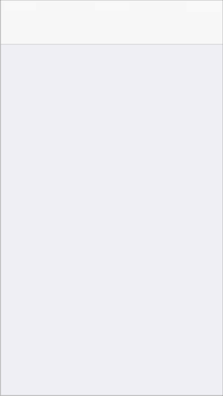
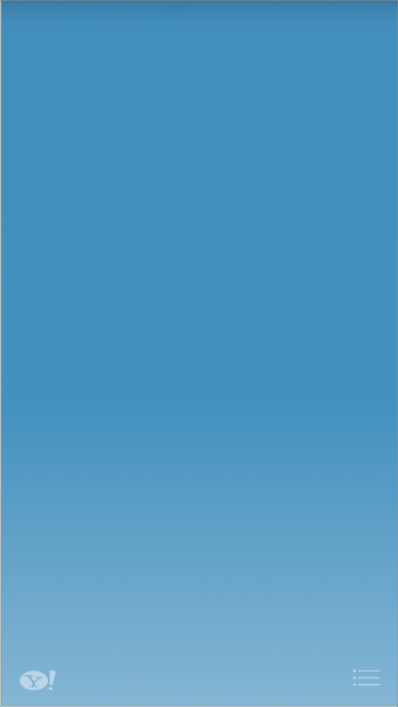

Launch Images
런치 이미지는 당신의 앱이 시작할 때 iOS가 디스플레이 하는 단순한 플레이스 홀더 이미지이다. 런치 이미지는 사용자에게 당신의 앱이 엄청 빠르고 방응성이 좋다는 인상을 준다. 왜냐면 이 이미지는 즉각적으로 보이고 곧 앱의 첫 화면으로 대체되기 때문이다.
iOS가 용도에 따라 다른 이미지를 공급할 수 있도록 하기 때문에, 각각의 이미지에 어떻게 사용되는지를 지정하는 이름을 붙여라. 런치 이미지의 파일이름은 이미지의 장치, 해상도, 방향을 지정할 수 있는 수정자를 포함시켜라. 이름 붙이는 법에 대해 자세히 알고 싶으면, iOS App Programming Guide의 “App Launch (Default) Images”를 보라.
사용자의 경험을 개선시킬 수 있는 보통의 런치 이미지를 제공하라. 특히, 런치 이미지는 다음과 같은 기회가 아니다 :
스플래시 화면과 같은 “앱 입장 경험”
앱 정보 윈도우
앱의 첫화면의 스태틱한 파트를 가지지 않는 브랜딩 요소.
사용자들은 앱 간에 빠르게 스위치 할 수 있기를 원하기 때문에, 런치 시간을 최소화하는 데 모든 노력을 기울여야 하며, 런치 이미지로 사용자의 주의를 끄는 방향이 아니라 중요시 하지 않는 방향으로 디자인 해야 한다.
런치 이미지를 앱의 첫 화면과 동일하게 디자인 하라. 다음을 제외하고 :
텍스트. 런치 이미지는 고정이기 때문에, 여기에 디스플레이하는 모든 텍스트는 로컬라이즈 되지 않는다.
변경될 수 있는 UI 요소들. 앱이 시동을 마쳤을 때 다르게 보일 수 있는 요소들을 포함하면, 사용자들은 런치 이미지와 앱의 첫 화면 사이에 즐겁지 않은 깜빡임을 경험하게 된다.
이 가이드라인을 따르는 게 평범하고 지루한 런치 이미지를 만들게 생각한다면, 맞다. 런치 이미지가 예술적인 표현의 기회를 제공하는 게 아니라는 것을 기억하라. 이것은 당신의 앱이 매우 빠르게 런치되고 즉각적으로 사용을 준비한다는 사용자의 인식을 개선하기 위한 의도로만 사용된다. 예를 들어, Settings 와 Weather는 각각 고정 백그라운드 이미지에 조금을 더한 이미지를 런치 이미지로 사용한다.
The Settings launch image
The Weather launch image

런치 이미지를 장치별로 다른 크기로 만들어라. 모든 장치를 위한 런치 이미지는 스테이터스 바 영역을 가지고 있어야 한다. 다음 크기의 런치 이미지를 만들어라.
아이폰 5와 아이팟 터치 (5세대) :
640 x 1136 픽셀
다른 아이폰과 아이팟 터치 장치들 :
640 x 960 픽셀
320 x 480 픽셀 (표준 해상도)
아이패드 portrait :
1536 x 2048 픽셀
768 x 1024 픽셀 (표준 해상도)
아이패드 landscape :
2048 x 1536 픽셀
1024 x 768 픽셀 (표준 해상도)
Copyright © 2014 Apple Inc. All rights reserved. Terms of Use | Privacy Policy | Updated: 2014-03-10